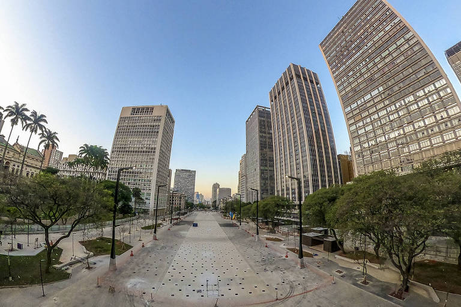
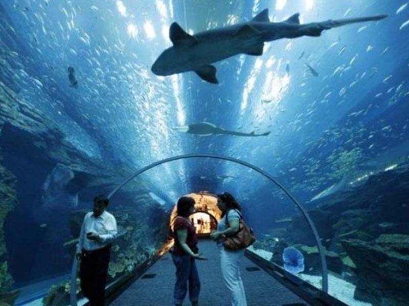
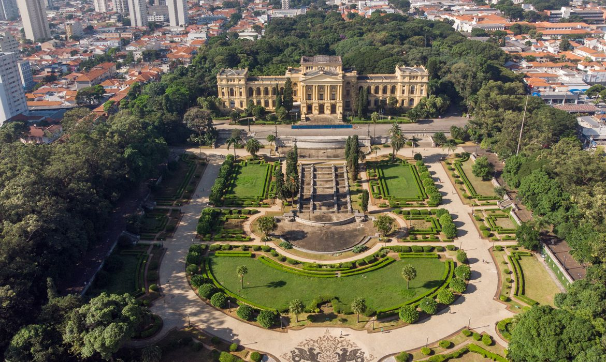
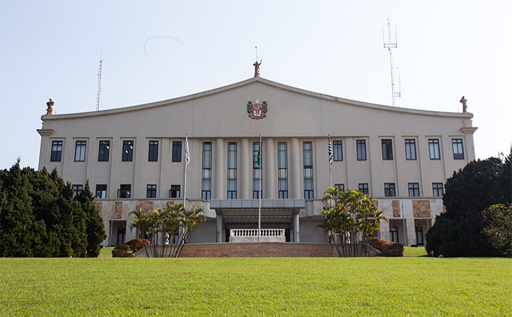
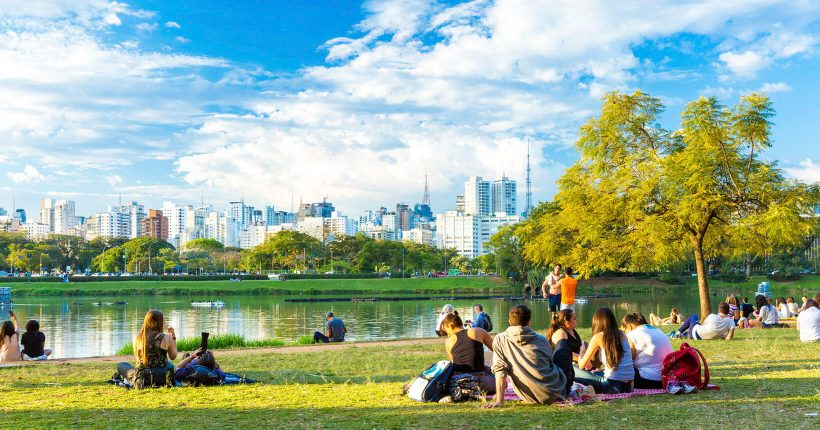

Este site é feito com o intuito fazer você turista ou apenas explorador paulista, conhecer melhor a cidade de São Paulo. A cidade de São Paulo é bastante conhecida pela sua grande população e como atração de fontes de trabalho.
Após navegar por este site, você conhecerá grandes atrações para visitar e ter uma "distração" quando estiver cansado, querendo apenas ter aquela sensação de paz.
Abaixo você conhecerá lugares incríveis, a TuriSP esta a disposição para poder te oferecer o melhor de SP com o melhor site de Turismo da nossa cidade.
Anhamgabaú
Vale do Anhangabaú é uma região do centro da cidade de São Paulo, situada entre a Praça da Bandeira e a Avenida São João. É um espaço público comumente caracterizado como parque, onde tradicionalmente se organizam eventos, como manifestações públicas, comícios políticos, apresentações e espetáculos populares. É considerado o ponto que separa o Centro Velho do Centro Novo.
O Vale do Anhangabaú é uma ótima opção para quem está visitando o centro e quer descansar durante o passeio. Também oferece uma bela vista de prédios do Centro Histórico e se interliga com outros espaços verdes.
O Vale do Anhangabaú foi uma plantação de chá antes da cidade de São Paulo se transformar em uma grande metrópole. Em um projeto aprovado em 1981, os arquitetos Jorge Wilhelm e Rosa Kliass o transformaram no parque que conhecemos hoje. No subsolo do vale, corre o rio que dá nome ao local: o Rio Anhangabaú. Em tupi, esse nome significa “água do mau espírito”. Isso porque muitos peixes morriam ao passar por esse trecho.
Aquario
Aquário de São Paulo é um oceanário localizado no distrito do Ipiranga, zona sudeste da cidade de São Paulo, Brasil. Foi inaugurado no dia 6 de julho de 2006, como o primeiro Aquário Temático da América Latina.
O passeio começa em um túnel com diversas espécies de peixes de água doce. Além dos peixes, você vai encontrar sapos, rãs, aranhas, cobras, jacarés e tartarugas que fazem parte da fauna e flora das florestas brasileiras.
Raia de Água Doce – são peixes cartilaginosos, assim como os tubarões, passam grande parte do tempo enterradas na areia, possui um ferrão serrilhado e pontudo na cauda coberto por um muco venenoso; Jiboia – não são serpentes venenosas, tem dentição áglifa e para capturar e matar suas presas fazem compressão, ou seja, utilizam de seu porte para se enrolar e apertar suas presas até que fiquem sem ar; Jacaré-do-Pantanal – habita a parte central da América do Sul, mede entre dois a três metros de comprimento e seu padrão de coloração é bastante variado, sendo o dorso particularmente escuro com faixas transversais amarelas, principalmente na região da cauda.
Masp

Museu de Arte de São Paulo Assis Chateaubriand é um centro cultural e museu brasileiro concebido em 1947 idealizado pelo jornalista paraibano Assis Chateaubriand com o crítico de arte italiano Pietro Bardi.
O Museu de Arte de São Paulo, é um museu privado, fundado em 1947 por Assis Chateaubriand e é considerado o primeiro museu de arte moderna no país. As obras são adquiridas por meio de doações da própria sociedade e, hoje, formam o mais importante acervo de obras de arte europeias do Hemisfério Sul. São mais de 8 mil objetos, incluindo pinturas, esculturas, fotografias, peças de vestuário da Europa, África, Ásia e das Américas. O primeiro diretor do MASP foi o crítico e marchand italiano Pietro Maria Bardi, que o dirigiu por 45 anos. Sua esposa, a arquiteta ítalo-brasileira Lina Bo Bardi, foi quem projetou o prédio. E o próprio prédio do MASP é uma obra de arte, tornando-se um ícone modernista e uma marca do seu trabalho. Ele foi construído “acima” do terreno, sustentado por quatro pilares de concreto em suas laterais. Parece uma enorme “caixa” suspensa. Abaixo dele, o “vão livre” está à disposição da população, utilizado como uma praça, inclusive com outras exposições, feiras, eventos
Museu
Os visitantes das instituições geridas pela Secretaria da Cultura do Estado podem conferir uma programação variada, que vai além da observação de obras de arte. Atualmente, os museus atuam como centros culturais e reúnem atividades com música, dança, teatro, fotografia, literatura e gastronomia, entre outras, abertas à participação do público. Além de apreciar as exposições, o público pode aproveitar os eventos gratuitos ou de baixo custo oferecidas pelas organizações. Todas oferecem ingressos grátis aos sábados, exceto o Museu da Imagem e do Som de São Paulo (MIS-SP), com entrada gratuita às terças-feiras.
Palestras e bate-papos sobre temas
Casa das Rosas: no dia 12 de novembro, às 14h, será realizada a apresentação “SOS Literatura”, em que será possível aprender com autores e profissionais do mercado sobre poesia, prosa, edição de livros, e-book, marketing para escritores e direitos autorais. Já em 14 de novembro, o espaço promoverá, às 19h00, o a palestra “Diante da Câmera: a Atuação para o Cinema”, com Ugo Giorgetti, com abordagem da atuação no contexto do cinema e tudo o que exerce influência diante da câmera. Para participar, é necessário retirar senha na recepção do museu. Museu da Imigração: a instituição terá, nos dias 24 e 25 de novembro, entre 13h30 e 17h30, um bate-papo com o tema “Encrespô! Vamos falar sobre cabelo”. Na conversa, serão apresentados relatos de vida e da produção de campanhas editoriais de moda, no intuito de debater a estética capilar. A partir das discussões, os participantes produzirão um material sobre racismo, identidade e gênero. Memorial da Resistência: o museu promove, todos os meses, a atividade “Sábado Resistente”, que envolve a apresentação de um filme ou documentário e a realização de um debate sobre momentos, nomes e questões importantes da história. No dia 11 de novembro, o tema da mesa redonda será “Um ano da morte de Fidel” e o filme exibido será “Um homem chamado Fidel”, de Oliver Stone. Em 25 de novembro, será proposto o debate “Negritude e resistência: a questão do genocídio da população negra no Brasil”. Os dois eventos têm início previsto para 14h.
Eventos de gastronomia
Os museus também realizam festas temáticas com música, comidas típicas e manifestações culturais. No dia 19 de novembro, das 14h às 18h, o Museu da Imigração promoverá o evento “Viva! Sabores da África”, que levará ao espaço os sabores da África, em tendas de alimentação de diversos países, como Congo e Moçambique.
Contações de histórias
As instituições organizam contações de histórias de todos os gêneros, para todas as idades. A Casa das Rosas apresentará, em 26 de novembro, às 15h, a atividade “Chove Chuva Choverando…”, narrativa inspirada no poema “Solidão”, de Oswald de Andrade, no qual as palavras e sonoridades traduzem os sentimentos do poeta em relação à capital paulista. O Museu Afro Brasil oferece, todos os meses, a contação “Aos pés do Baobá”, que apresenta narrativas africanas ou afro-brasileiras ao público. Para acompanhar a programação, os interessados devem acessar o site do museu.
Palacio
A sede do Governo Paulista começou a ser construída em 1955 para abrigar a Universidade "Fundação Conde Francisco Matarazzo", mas a obra foi interrompida e o Governo do Estado a assumiu. Em 19 de abril de 1964, a sede do governo passou de Campos Elíseos para o Morumbi, onde o palácio ganhou a denominação "Bandeirantes" em homenagem aos pioneiros que expandiram as fronteiras brasileiras. O Palácio dos Bandeirantes possui acervo, com obras de artistas como Portinari, Antonio Henrique, Djanira Motta e Silva, Aldemir Martins, entre outros. Diversas obras podem ser vistas em exposições no local, que conta ainda com o Salão dos Pratos e a Galeria Governadores.
Rotas
O percurso de visitação explora quatro rotas da produção artística do período, com destaque para o contexto artístico-cultural paulista antes mesmo antes da chegada das vanguardas modernas até a década de 1970, representada por algumas obras mais tardias. A primeira procura mostrar, por meio de pinturas conhecidas como “acadêmicas”, o choque cultural entre o ambiente ultraconservador que a cidade ainda vivia antes da década de 1920 e o novo modo de pensar da sociedade com a revolução das artes plásticas. Na segunda, estão expostas obras da década de 1920 que evidenciam as novas técnicas e formas de expressão dos modernistas dos primeiros anos, tendo como ponto de referência a Semana de Arte Moderna, de 1922, no Theatro Municipal de São Paulo.
Já a terceira apresenta a produção artística das gerações de 1930 e 1940, com destaque para a presença de artistas imigrantes, ou descendentes de imigrantes, e de outros que se organizaram em grupos na capital paulista, como o Grupo Santa Helena. A quarta rota do percurso traz um debate sobre as artes plásticas, no contexto da modernidade nos anos 1950: naquele período, ser moderno era expressar-se de forma abstrata, e não mais figurativa.
Praque Ibirapuera
Você com certeza já ouviu falar do Parque do Ibirapuera, o mais famoso da cidade de São Paulo. Muito procurado para a prática de esportes e também para curtir momentos de descanso, a região abriga uma majestosa área verde, responsável por ser o pulmão da cidade.
Uma coisa que talvez você ainda não saiba é que o local abriga mais de 20 atrações incríveis, grande parte delas culturais, e que podem ser conhecidas sem precisar gastar muito, e algumas delas até gratuitamente. Quer saber as principais? Vamos nessa.
Mapa do Ibirapuera
1. Pavilhão Japonês
Nesta área que homenageia a cultura japonesa você encontrará um salão nobre, uma linda casa e uma copa que prepara a Cerimônia do Chá. Não deixe de conhecer o lindo lago com as carpas, e os jardins ao redor da casa. Serviço: Portão 10 Horário de funcionamento: Quartas, sábados, domingos e feriados das10h às 12h, e das 13h às 17h. Ingressos: R$ 6 para adultos e R$ 3 para crianças de 5 a 12 anos, estudantes e idosos de 60 a 65 anos. Para idosos acima de 65 anos, a entrada é gratuita.
2. MAM – Museu da Arte Moderna
O primeiro Museu de Arte Moderna na América Latina está localizado no Parque do Ibiraquera. Ele foi projetado por Lina Bo Bardi, em 1948, e abriga mostras de arte brasileiras e internacionais, com 5 mil obras enriquecendo o acervo. Você também pode fazer cursos no MAM, ter acesso ao cinema, biblioteca, loja, auditório e restaurante. Serviço: Portão 3 Horário de funcionamento: Bilheteria: Terça a domingo e feriados das 10h às 17h30min. Visitação: Terça a domingo e feriados das 10h às 18h. Fechado as segundas-feiras (inclusive feriados) Ingressos: R$5 – de domingo a entrada é gratuita
3. OCA
O Pavilhão Lucas Nogueira Garcez, conhecido como OCA, possui 10 mil metros quadrados e recebe diversas exposições itinerantes. Antigamente chegou a abrigar os museus da Aeronáutica e Folclore, e chama a atenção pela sua arquitetura, assinada em 1954 por Oscar Niemeyer. Serviço: Portão 2 Horário de funcionamento: Terça à domingo 10h às 17h.
4. Jardim de Esculturas
O Jardim de Escuturas abriga 30 obras de artistas brasileiros espalhadas entre o MAM, a Bienal e a OCA, totalizando um espaço ocupado de 6 mil metros quadrados. Contando com o paisagismo do icônico Burle Marx, as artes foram assinadas por artistas do século XX, como Carlos Alberto Farjados, Almílcar de Castro e Emanoel Araújo. Entre a Marquise e a OCA você encontrará o mapa fixo demarcando onde estão todas as obras. Serviço: Portão 3 Horário de funcionamento: Todos os dias das 8h às 20h.
5. Bienal
A Bienal foi criada por Ciccillo Matarazzo em 1962 para abrigar um arquivo histórico da arte moderna e contemporânea, sendo o maior da América Latina. Além de promover algumas atividades como cursos, visitas orientadas, palestras e seminários, o local tem como intuito estimular o interesse pela cultura e criações artística. Ah! É lá que acontece todos os anos o SPFW e a Bienal do Livro. Serviço: Portão 3 Horário de funcionamento: todos os dias das 8h às 20h.